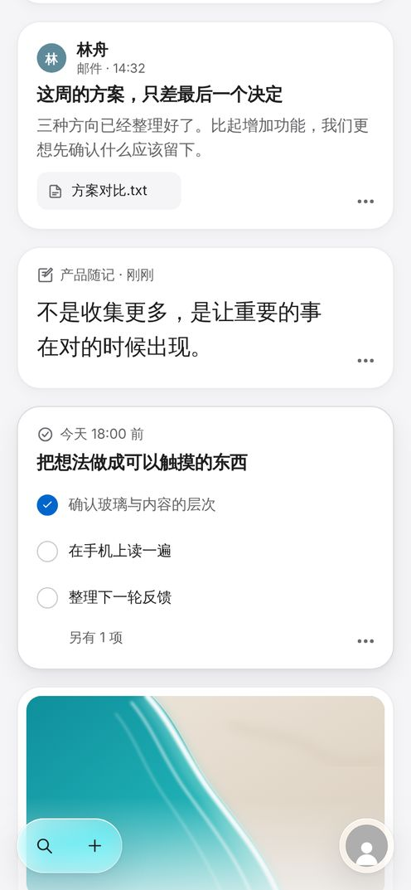
停下：桌面工具胶囊在左，头像在右
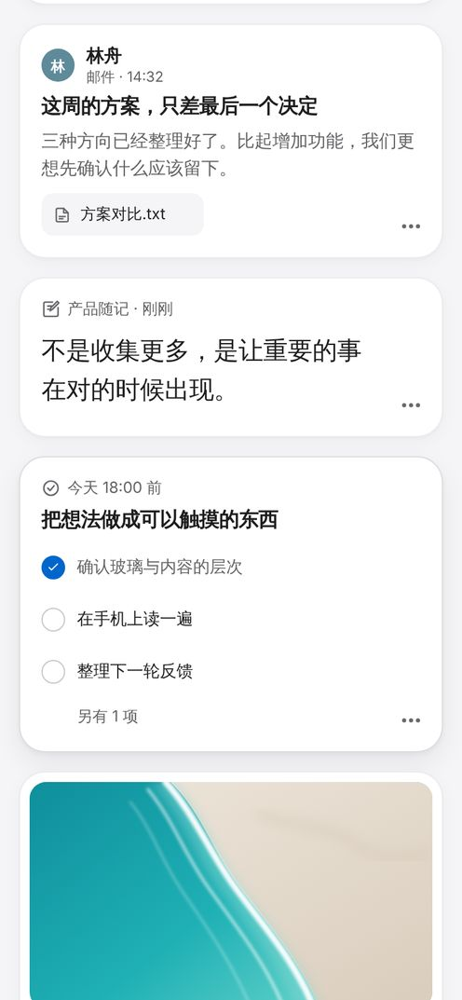
向下滚动 28px：底栏完全收起
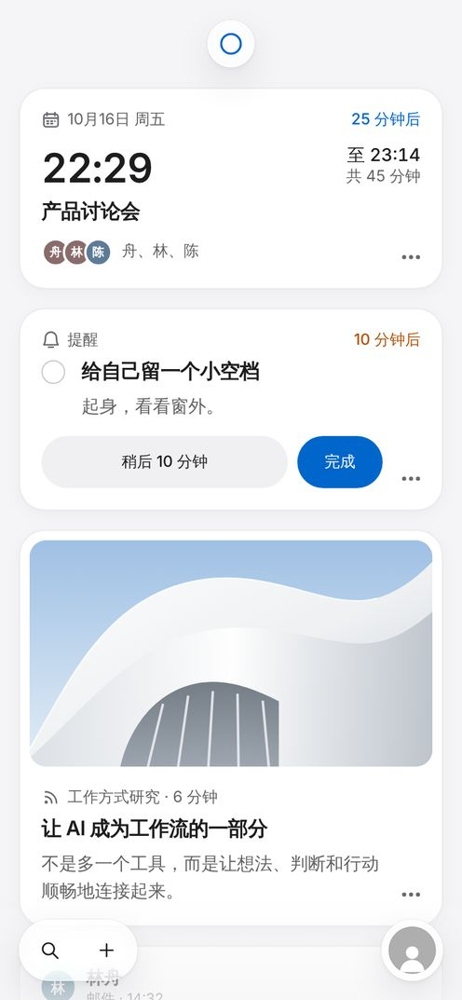
下拉刷新：圆环在页面让出的空隙正中
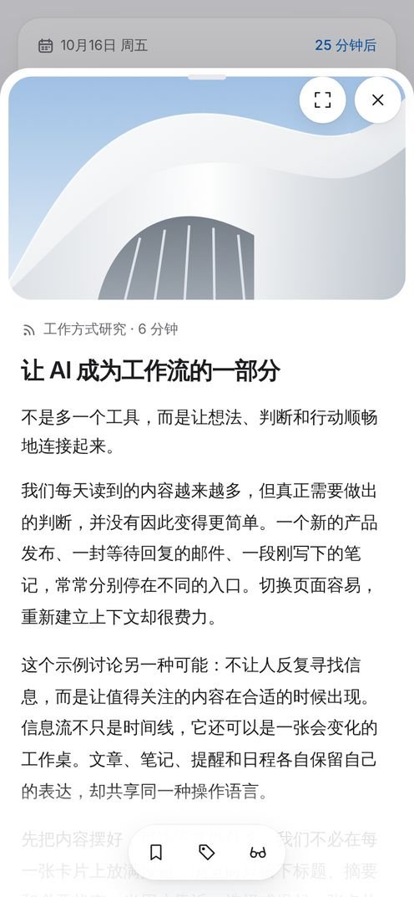
详情：关闭、全屏是浮在封面上的白色圆片
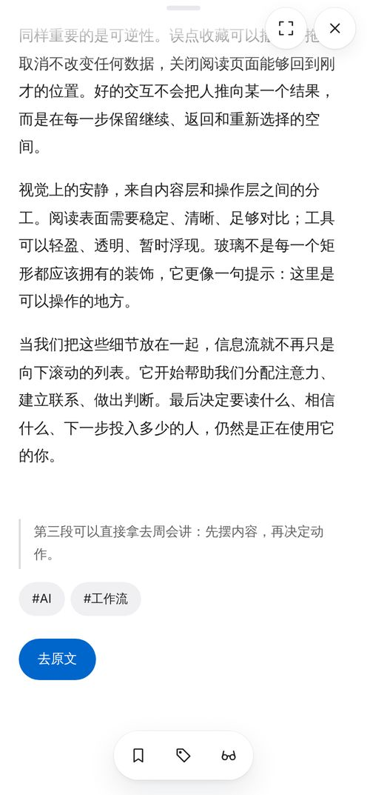
读到底：备注、标签、去原文在工具条上方
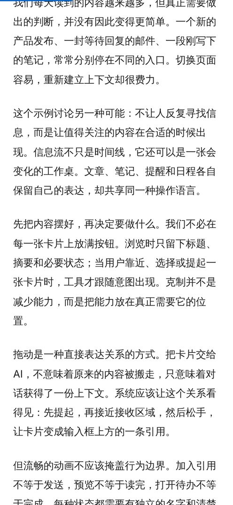
阅读向下读：上下按钮都收起
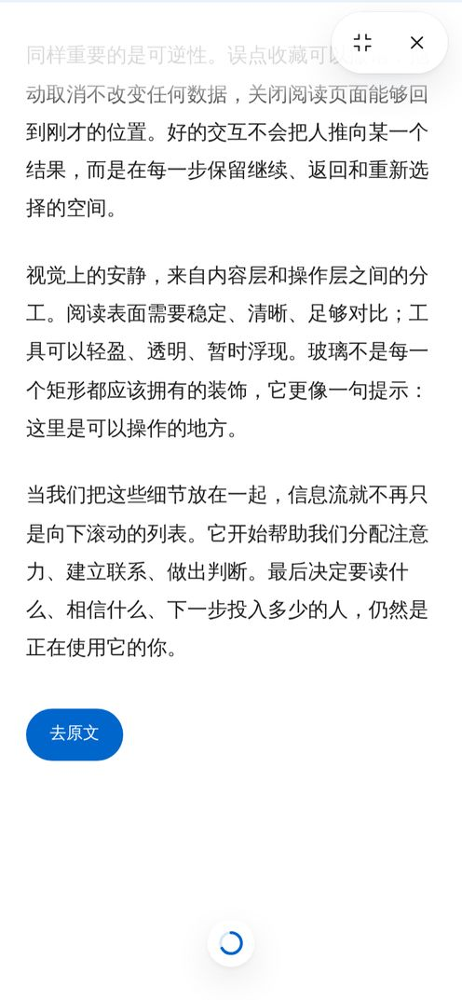
读完圆环在页面最底部
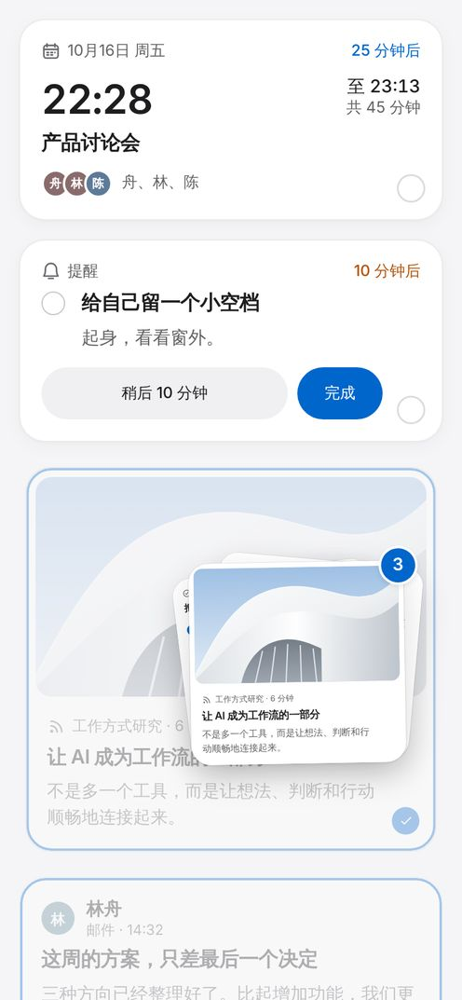
多选拖动：三张真实卡片叠成一摞
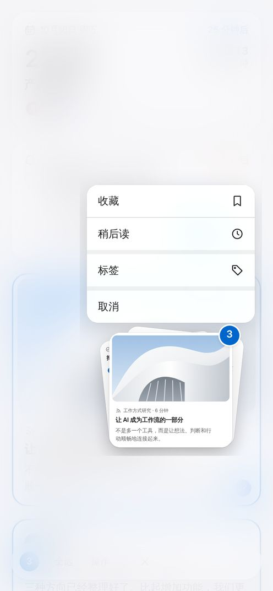
松开：菜单下方不够时向上
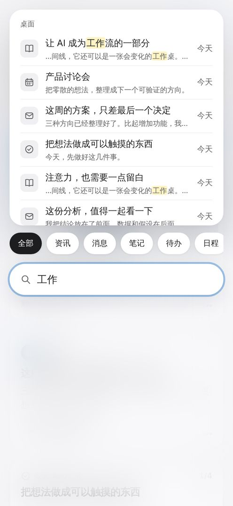
手机搜索在底部，跟着键盘升起
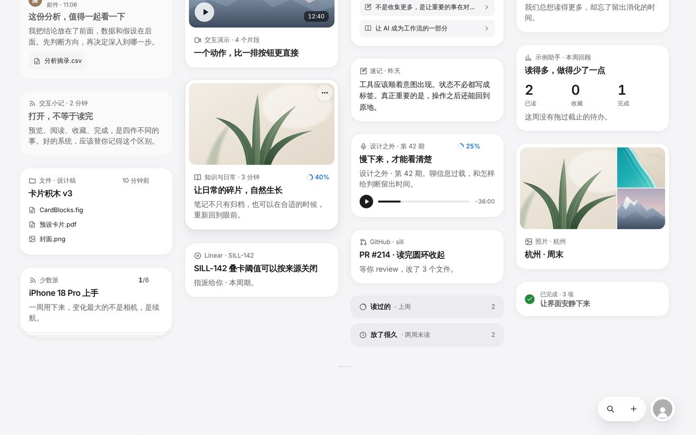
桌面：同一组按钮在右下角
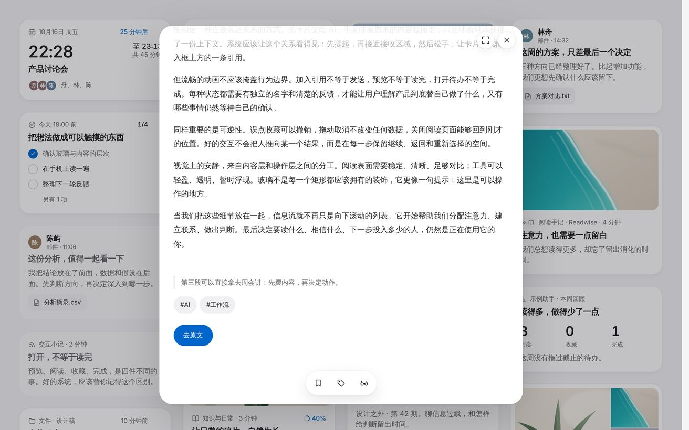
桌面详情：工具条在卡片内部底边，下面有滚动边缘
底栏
- 没有入口球和展开菜单；最右侧头像，点一下打开设置。
- 桌面工具一个玻璃胶囊：搜索与筛选、记一笔。以后的功能组各自单独一颗玻璃按钮，放在胶囊和头像之间。
- 刷新靠下拉，键盘 R；回到顶部用 T。
- 行高 52，按钮 44×44，离边 28（手机 16）。
工具条收起
- 底栏、详情和阅读页工具条、顶部圆片同一条规则，手机和桌面一样。
- 向下连续 28px 完全收起，不留占位；向上 14px、停下 0.65 秒、到顶或到底时回来。
- 键盘焦点进入时立即回来；减少动态效果时只淡入淡出。
材质与配色
- 玻璃只在功能层：38% 白、blur 12 · saturate 1.9，左上亮边、右下弱边、0.5px 外圈，宽而淡的阴影。
- 遮罩只压暗不模糊；搜索和多选菜单用磨砂。
- 蓝色只给提交动作和开关；选中用墨色和浮起白行；标签用浅灰。
详情与阅读
- 底部最多三个图标：收藏、备注与标签，第三个按类型。
- 去原文、回复、加入、为什么看到放在内容末尾。
- 详情和阅读页里没有头像、设置或底栏。
多选
- 最多三张真实卡片叠放，第一张选中的在上，角标显示总数。
- 松手后 240 宽菜单，下方放得下向下，否则向上；点了才执行。
- 不能拖进 AI 对话或其他页面；没有下滑打标签。
搜索与键盘
- 不显示数量，数量只给读屏软件。
- 输入法拼写中不筛选，选字后再筛选。
- 键盘弹出时要打字的弹层停在键盘上方，底栏让开。